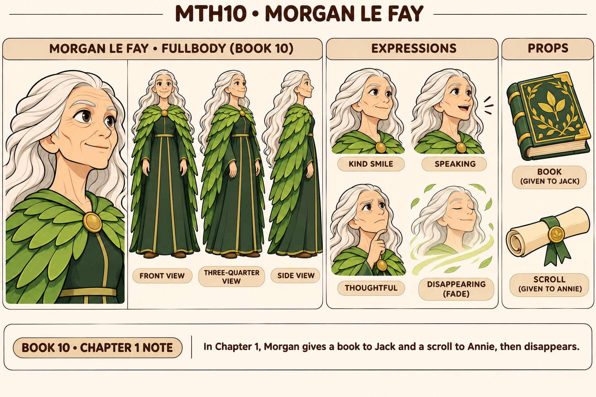

Reviewed visual references



Production brief from Master JSON. Inspect actual character sheets and source passages before generating. Mentioned-only characters are not visible cast.
CHARACTER CONSISTENCY SHEET Reference candidates are NOT a verified visible cast. Select source-local figures only; absent and mentioned-only figures remain absent. Character ID: MTH-JACK Name: Jack Locked visual traits: eight-and-a-half-year-old boy; short brown hair; large round glasses; red long-sleeve shirt; blue jeans; brown sneakers; cautious, observant posture Character ID: MTH-ANNIE Name: Annie Locked visual traits: seven-year-old girl; chin-length blonde bob; lavender T-shirt; denim shorts; red sneakers; energetic, fearless posture Character ID: MTH04-MORGAN Name: Morgan le Fay Locked visual traits: Old woman with long white hair, robe; absent after departure. SETTING / WARDROBE: Rattlesnake Flats, hotel, prairie and Blue Canyon; cowboy clothing/boots only after source changes; horse ownership and riders follow source. Keep shared Jack/Annie faces, glasses, hair and proportions; source-specific clothing wins. Do not import Book 4 rain gear into these books. Book-specific common visual sheets must be created and validated before generation. Upload actual sheet files as sources, not filenames in text. Use source_image_records for original lettering, diagrams, clothing and props. Source heading metadata is not a new story caption.
CHARACTER CONSISTENCY SHEET Reference candidates are NOT a verified visible cast. Select source-local figures only; absent and mentioned-only figures remain absent. Character ID: MTH-JACK Name: Jack Locked visual traits: eight-and-a-half-year-old boy; short brown hair; large round glasses; red long-sleeve shirt; blue jeans; brown sneakers; cautious, observant posture Character ID: MTH-ANNIE Name: Annie Locked visual traits: seven-year-old girl; chin-length blonde bob; lavender T-shirt; denim shorts; red sneakers; energetic, fearless posture Character ID: MTH04-MORGAN Name: Morgan le Fay Locked visual traits: Old woman with long white hair, robe; absent after departure. SETTING / WARDROBE: Rattlesnake Flats, hotel, prairie and Blue Canyon; cowboy clothing/boots only after source changes; horse ownership and riders follow source. Keep shared Jack/Annie faces, glasses, hair and proportions; source-specific clothing wins. Do not import Book 4 rain gear into these books. Book-specific common visual sheets must be created and validated before generation. Upload actual sheet files as sources, not filenames in text. Use source_image_records for original lettering, diagrams, clothing and props. Source heading metadata is not a new story caption.
